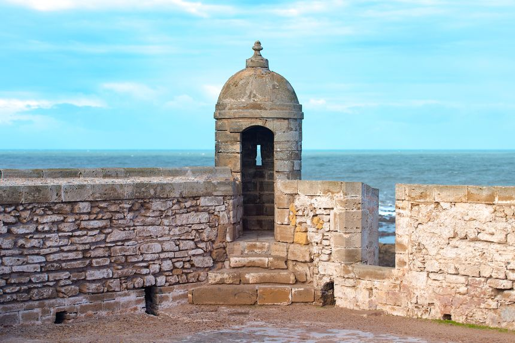
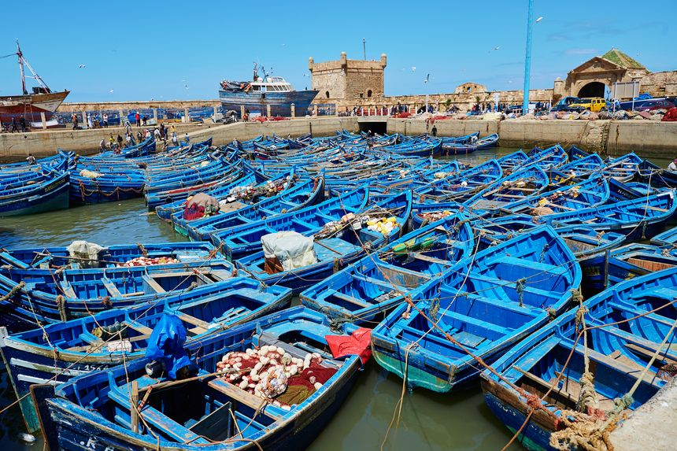
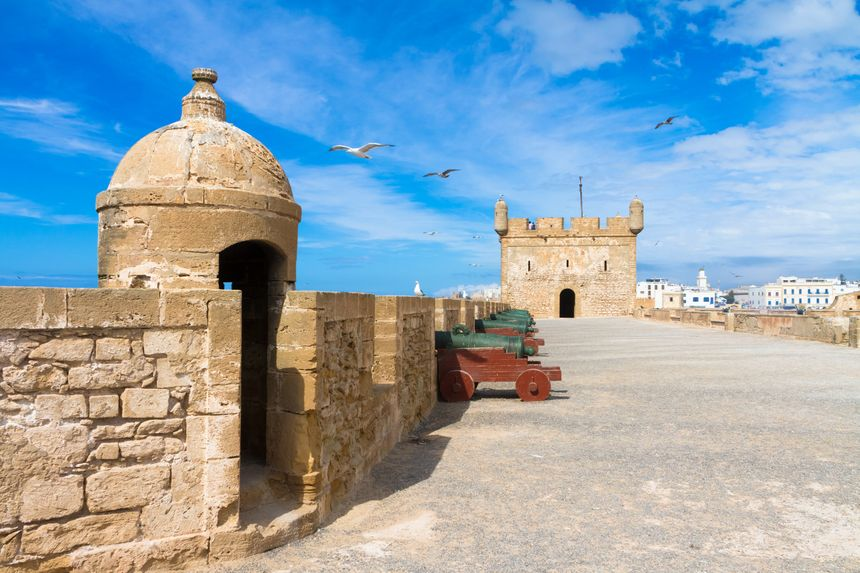
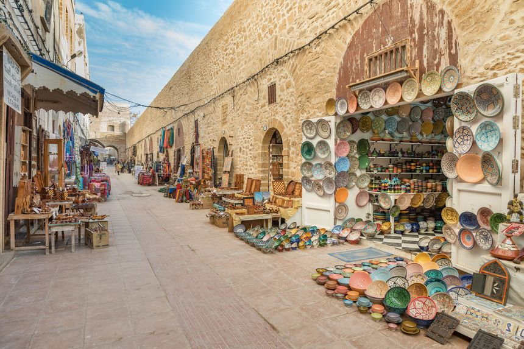

La Médina
La Médina d’Essaouira se découvre au gré de balades dans les ruelles pittoresques,
notamment celle appelée « La Scala de la Kasbah », petit chemin menant au cœur même de la ville.
Envie de découvrir l’artisanat local ? Direction le souk, où fruits, légumes et épices envahissent les étals.
Mais la spécificité d’Essaouira réside dans le savoir-faire des ébénistes (notamment pour la construction
de bateaux en bois), et surtout dans la fabrication de l’huile d’argan, dont l’arbre ne pousse que dans cette
région du Maroc ! Enfin, Essaouira est également réputée pour… ses galeries d’art. La ville et son atmosphère
si paisible inspirent en effet bon nombre d’artistes

Le port
Construit au XVIIIème siècle, le port d’Essaouira fut autrefois l’un des plus importants
comptoirs commerciaux du Maroc. S’il s’apparente aujourd’hui plus à un charmant port sardinier,
il reste une étape incontournable pour découvrir et comprendre l’histoire de la ville, qui vit essentiellement
de la pêche. Le matin, le retour des bateaux et la criée sont un véritable spectacle à ne pas manquer.
Les quais et la corniche méritent également un coup d’œil, le premier servant de chantier naval pour la construction
de bateaux en bois de Thuya, selon des techniques traditionnelles, et le deuxième permettant d’apprécier
une jolie vue sur les mâts des chalutiers, et le bleu de l’océan qui s’étend à perte de vue.

Les remparts
Les imposants remparts encerclant la médina de l’ancienne Mogador furent construits au XVIIIème
siècle pour protéger la ville des invasions étrangères. Flanquée de quatre grandes portes au Nord,
à l’Ouest, à l’Est et au Sud, on peut se promener le long de cette grande muraille de pierre,
où se trouvent encore des canons tournés vers la mer. Le soir, c’est l’endroit idéal pour contempler
le coucher du soleil avec la vue sur le port. Pour la petite histoire, les remparts d’Essaouira furent
construits par l’architecte français Théodore Cornut, élève d’un certain Vauban.

Les souks d’Essaouira
Comme de nombreuses villes au Maroc, le souk d’Essaouira est un plongeon dans la culture locale,
le meilleur endroit où côtoyer les habitants de la ville tout en faisant ses emplettes.
Sectionné en plusieurs parties distinctes, le souk se compose d’un marché aux poissons
(et oui, on est quand même au bord de la mer), d’une place aux épices, d’un marché aux puces aussi appelé
La Joutia, théâtre de ventes aux enchères, et enfin d’un marché des joailliers où l’on peut acheter
de sublimes bijoux en or ou en argent. Sans oublier les objets issus de l’artisanat marocain tels
que des tapis ou des articles de maroquinerie et de marqueterie.